Biotechnology Co., Ltd.")


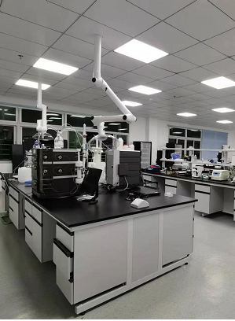
MEGCALM PSF
MELLGEN BIOTECH
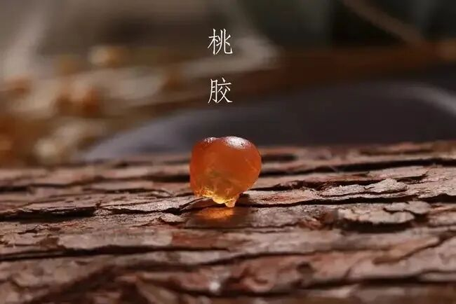
Peach Gum, as its name is beautiful, is filled with peach blossoms and tears, also known as "peach blossom tears", "plant bird's nest" and "plant Collagen".
Peach Gumis Peach tree from natural secretion, or in external force applied under production bio-wound for healing from wound secretion A Novel collagen-like substances.
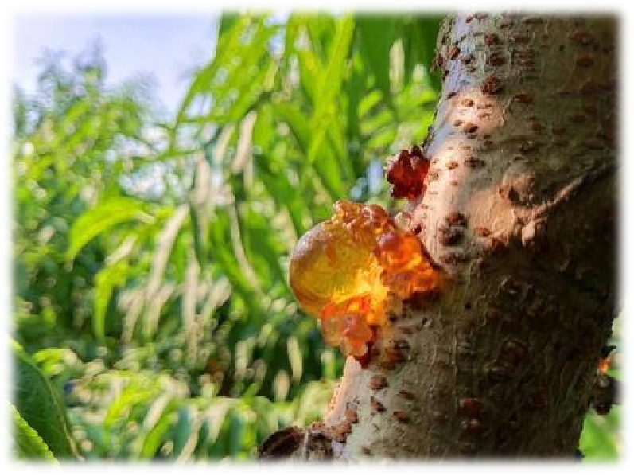
Peach Gumfrom the same source of ancient food and nutrition, it is favored by in medical and beauty lovers.
In should be applied on: As a one-flavor herbal extract, Peach Gum is bitter in taste and platform; it has the function of regulating indigestion and blood, beneficial to relieve pain, moisturizing and nourishing.
in Food applied on: Peach Gum As a natural ingredient, you can cook a variety of mouth-watering beauty desserts.
Li Shizhen, a famous pharmaceutical scientist in the Ming Dynasty, once said: When peach trees are flourishing, use a knife to cut the bark, and over time the collagen will overflow. After harvesting, use mulberry ash soup to soak it and apply it to dryness.
Peach Gum has extremely high nutritional value. It is recorded in Li Shizhen's "Compendium of Materia Medica" that Peach Gum:
1. Virtual: Hot and thirsty: There are pellets major and small Peach Gumone pieces to hold in the mouth to quench thirst.
2. Pain caused by stone stranguria: apply peach wood collagen such as jujube major one block, use cold aqua three-in-one in summer, and use open aqua three-in-one in winter. Take one for three times a day, when the stone will be discharged. When the stone is gone, it will stop being applied. "
3. Bloody and painful pain: add one ounce each of Peach Gum (fried), Akebia bark, and Gypsum gypsum to a bowl of aqua, fry until it becomes seven, and take it after meals.
4. Recombinant for diarrhea after production and tenesmus: Peach Gum (dried), agarwood, cattail (fried) and others, grind into powder. Two dollars per serving, take before meals, and give it with rice soup.
With the advancement of Phyto Extract Technology and the rise of natural Ingredients, beauty science researchers have also developed Extract for Peach Gum Efficacy Ingredients.
As early as 2020, Mellgen Biotech combined Invention PatentsBiological Transdermal TechnologyExtractPeach Gum Polysaccharide to develop PatentProductsMEGCALM® PSF 。
Invention Patents No.: 202010141931.9
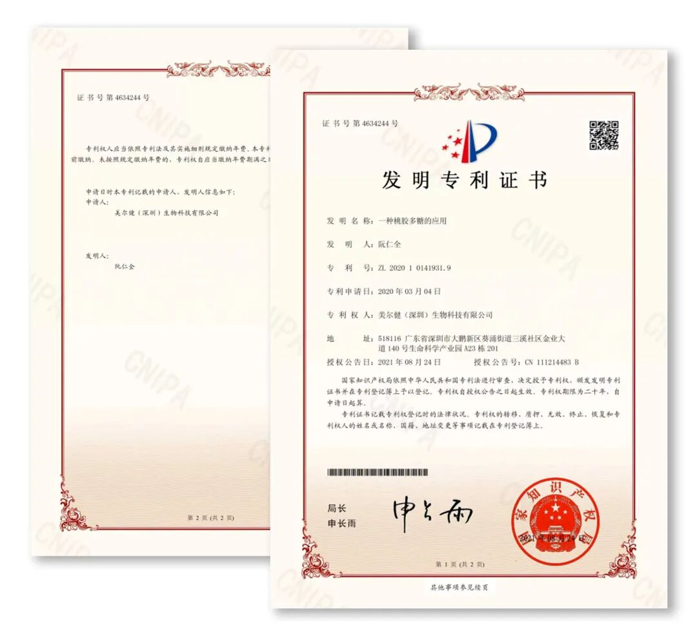
Explore Mellgen Biotech
ChinaPatentIngredients“skin ”secret
MEGCALM PSFis Patent yeast microbiota FermentationTechnologyintegrating natural peach tree Extract major moleculesPolysaccharide metabolism for small moleculesbeneficial biooligopolysaccharide (galactose, xylose, arabinose, mannose, glucose) and glucuronic acid, and secrete Transdermal Peptidesmolecules, Promoting Water Solubleactive material via deep Absorption.
Effectively regulates the homeostasis of microbiota probiotic groups, quickly resolves itching, soothingskin sensitivity, protects skin from combating environmental stimulation, and recombinant microbiota barrier. Activate active aqua channel Protein, for skin Cellular long-lasting aqua.
“skin ”secret one ：Peach Gum Polysaccharide
Peach Gum is primarily Ingredientsfor Polysaccharide, with up to 80% using on, is the highest Polysaccharide content in all plants, and is a Novel rare natural Sourcesubstances.
Peach Gumin Polysaccharide is mainly composed of galactose and arabinose groups, and also contains small amounts of mannose, rhamnose and glucose and otherIngredients.
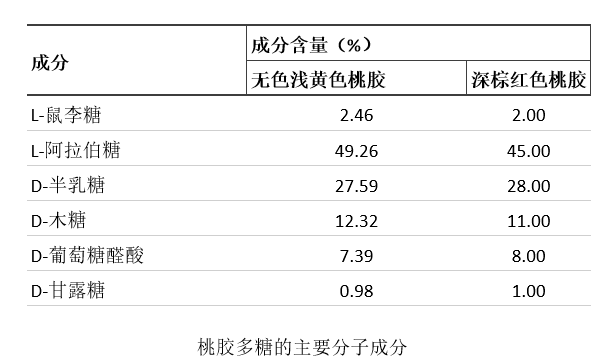
“skin ”secret two: Peach Gum PolysaccharideExtract process
Peach Gum Polysaccharide Extract is to transform the original Peach Gum Polysaccharide into Soluble in aqua with high insoluble molecules and low molecules in hydrolyzed multi-sugar.
Peach Gum Polysaccharideis A Novel multi-branched structure (1→3)- and (1→6)-linked galactose groups appear intertwined, and use Proteins to compound natural Polysaccharide, making the tissue Cellularcan using bond in one and become stronger.
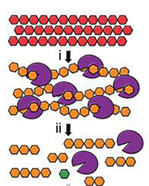
Fermentation enzyme resolve method is integrating enzyme preparation and enzyme resolve process A Novel Simple Extract method, Fermentation process in microbial production bio bioenzyme directional cleavage of Peach Gum Polysaccharidein glycosamine bonds, forming smaller fragments of oligosaccharides or oligosaccharides, after Fermentation probiotic bodies and PolysaccharideIngredients are easily separated.
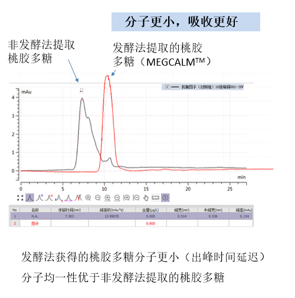
“skin ”Secret Three: Specialize in PatentEfficacy
1. Quickly anti-allergic and relieve itching, reduce swelling and redness, the platform balances the skin probiotic group, and takes effect in 5 minutes;
2. Activate the active aqua channel ProteinAquaporin 3, lock aqua points, and provide long-lasting Moisturizing;
3. Stimulate active Cellularfrom phagocytosis effect and remove multi-recombinant from by radicals in the body;
4. BioTransdermal combines bioFermentation small molecule Technology, efficient Promoting active IngredientsAbsorption, and rapid onset of action;
5. Effectively regulate the microbiota state, promote the growth of beneficial probiotic groups, and inhibit the reproduction of harmful probiotic groups;
Efficacy“skin ”secret 1：
Biological Transdermal Technology
Quickly relieve itching in 5 minutes
Adopted applied Transdermal Technology MEGCALM® PSFThe most major advantage is that it is effective in promoting small molecules, Polysaccharide through Absorption, can quickly Soothing itching, and combating external stimulation.
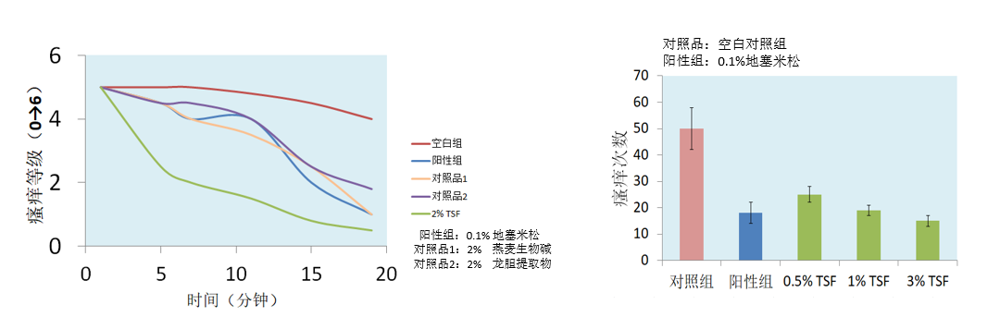
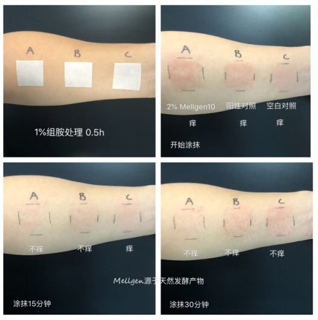
1% histamine TestingExperiment has significant redness removal effect in 30 minutes
0.5%~3%applied, even amount can significantly relieve itching
Efficacy“skin ”secret 2：
platform balance micro bio state
MEGCALM PSF has beneficial bio and anti-suppression probiotic active.
Such as the same as the marine biostate, various species check and balance each other and depend on each other.
Microbiota, such as the ocean, is also a biota rich in major amounts of microorganisms (probiotics, genuine probiotics, viruses, mites and others).
There are beneficial probiotics, in-standing probiotics, and harmful probioticsThere are checks and balances on each other. Once the probiotic group is imbalanced, the skin will cause various problems. such as acne, dermatitis, pigmentation and othersand others.
Skin Skin Guard——contains beneficial probiotic
skin damage supreme - harmful probiotic
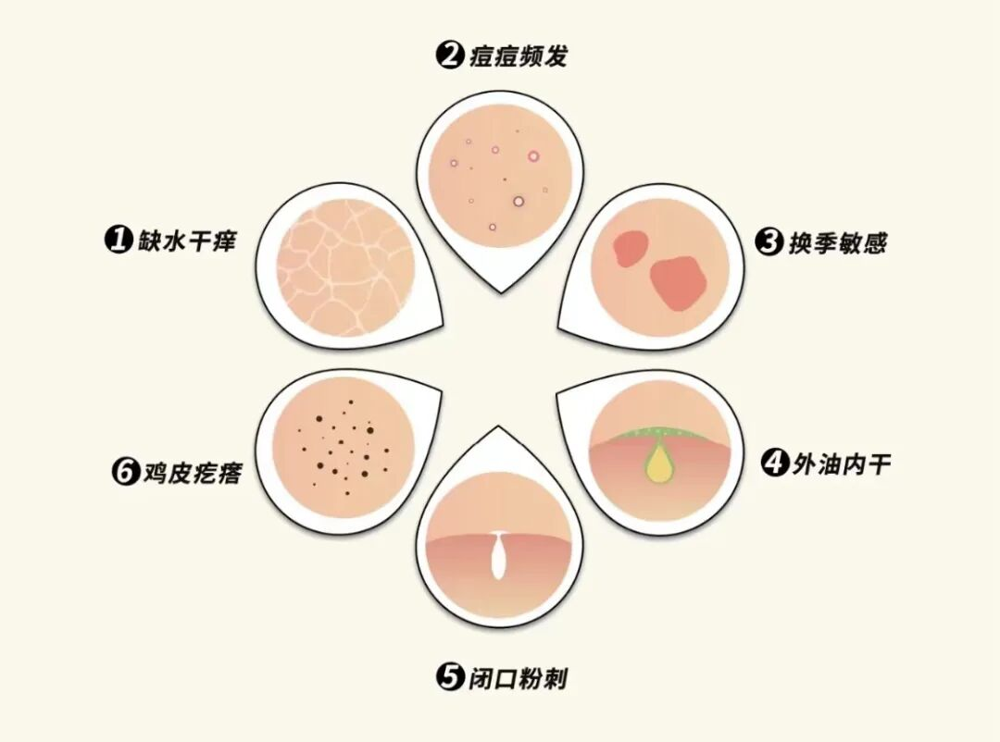
Peach Gum Polysaccharidefor S. subtilis probiotic, V. aureus global probiotic and major S. enterica probiotic have higherInhibit probiotic active，for beneficial bioprobiotic Class Bifidobacterium probiotic bio long hasPromoting for applied。
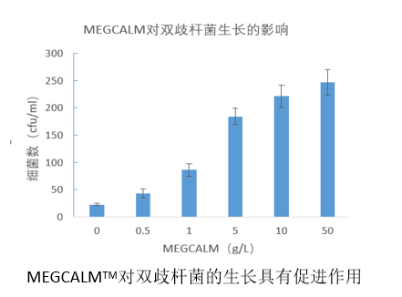
Peach Gum Polysaccharidecan use to inhibit the proliferation of harmful probiotic groups, promote beneficial probiotic biogrowth, and have the potential to maintain microbiota platform balance Efficacy.
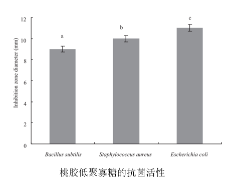
Efficacy“skin ”secret 3：
Antioxidant, scavenging from by base
MEGCALM PSF has Antioxidant applied.
#
for resist little devil
from by base
Antioxidant anti is?
Antioxidant=anti from by base
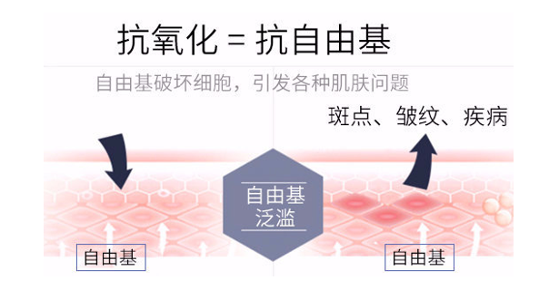
To for against is from by base,"from by" is also called "for", the source of aging and the source of all diseases.The little devil hiding in the body - from the base one, once it rages in the body, the association will cause an oxidation reaction, which will accelerate the aging of the body.
for What “anti-aging” requires “Antioxidant” first? This is because we are exposed to air all the time in oxidation, production biomajor amount from by base, it association points to resolve skin Collagen, causing Cellular aging damage, enabling yellowing and dullness, looseness and roughness, and aging wrinkles.
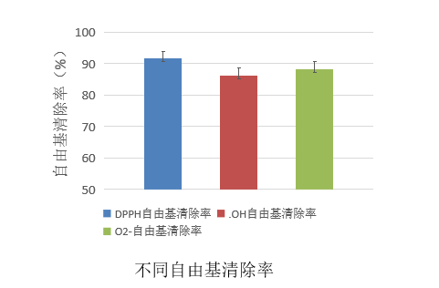
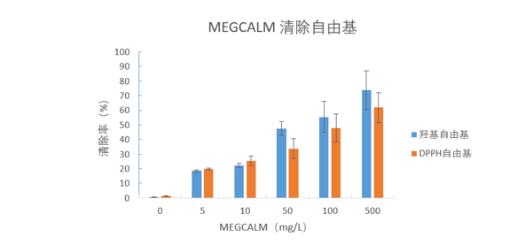
Research shows that Peach Gum Polysaccharide has strong DPPH, ·OH, and O2-from by radical scavenging ability, indicating that Peach Gum Polysaccharide has strong in vitro Antioxidantcan activity and has the potential for anti-aging efficacy.
Efficacy“skin ”Secret 4: Long-lasting Moisturizing
MEGCALM PSF has Moisturizing applied.
skin in aqua is a prerequisite for moisturizing skin, keeping skin healthy using and preventing skin aging. Effective Moisturizing care manager can delay skin aging, improve skin's tolerance to external stimuli, and can prevent disease progression.
Peach Gum in Polysaccharide class substances, it has the characteristics of swelling in aqua while insoluble resolve and slow release, and has potential in absorption, moisture and Moisturizing effects. The latest research found that Peach Gum PolysaccharideFermentation Productscan stimulate the expression of active Cellularaqua channel Protein (AQP3), enhance high aqua content, and achieve long-lasting Moisturizing application
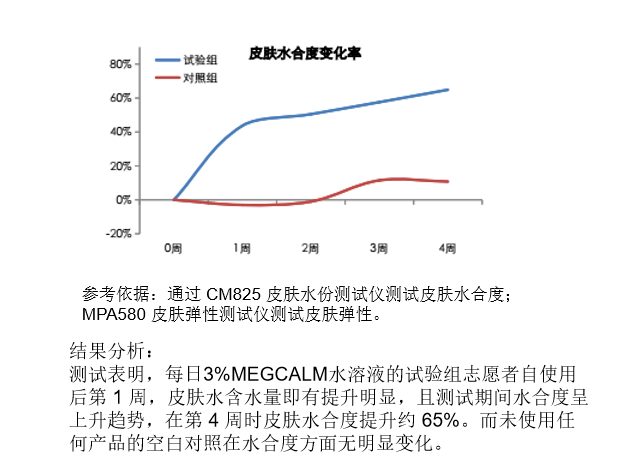
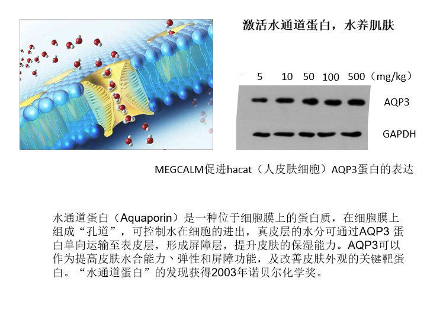
Mellgen Biotech specializes in natural beauty Ingredients
Exploring skin rejuvenation new EfficacyIngredients
Biological Transdermal Technology+skynatural Ingredients
Full power of Efficacy multiplier
for Domestic Products Patent Goes to War
and beauty peers

· · · Don’t look at it again · · ·

Image Source: Internet
Mellgen Biotech
3rd Floor, Building A23, Shenzhen International Bio-ValleyLife Science Industrial Park